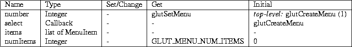

Next:
B glut.h ANSI C
Up:
A GLUT State
Previous:
A.3.3 Layer State
A.4 Menu State

(1)
Assigned dynamically from unassigned window numbers greater than zero.
Next:
B glut.h ANSI C
Up:
A GLUT State
Previous:
A.3.3 Layer State
Mark Kilgard
Fri Feb 23 08:05:02 PST 1996